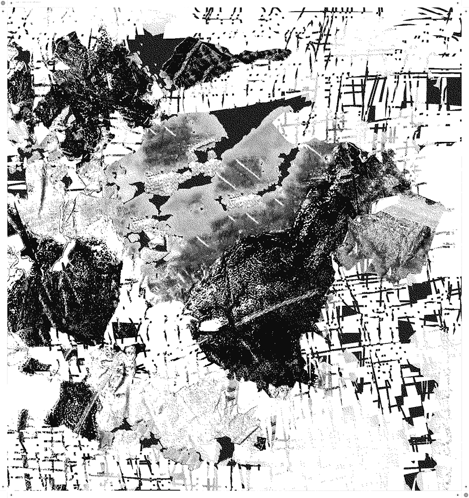
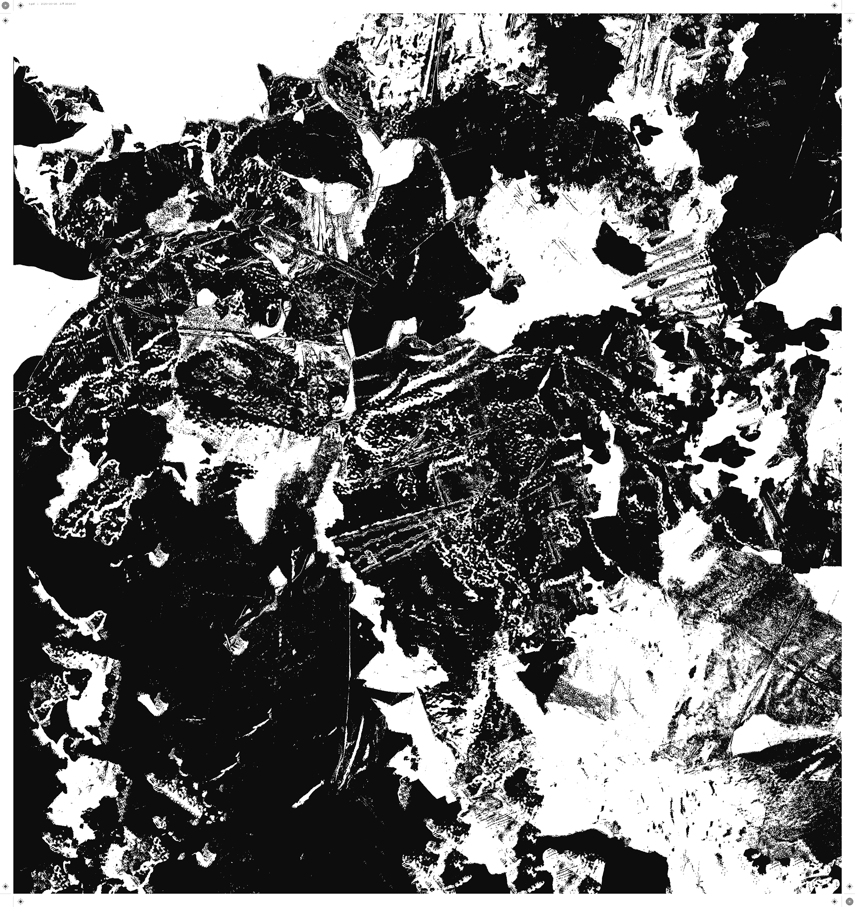
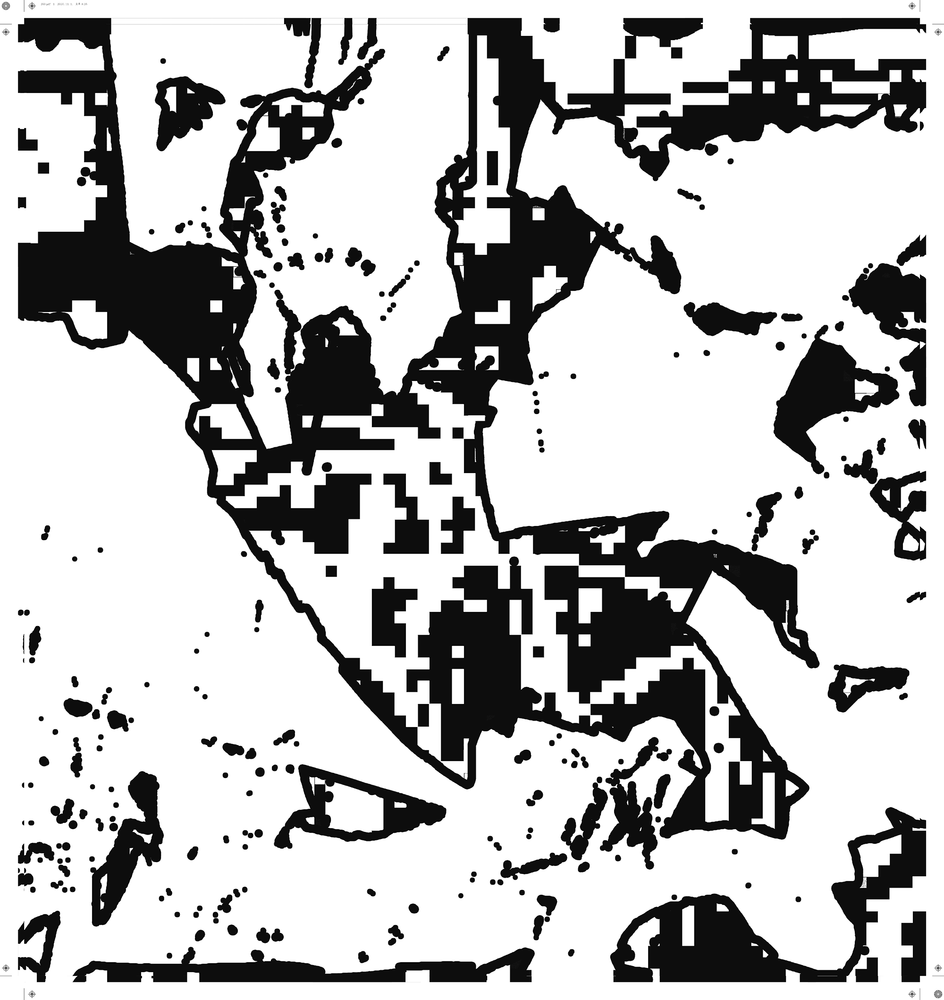
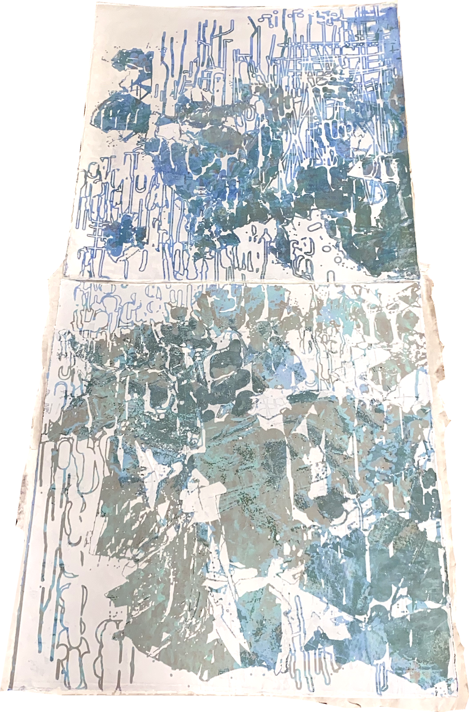
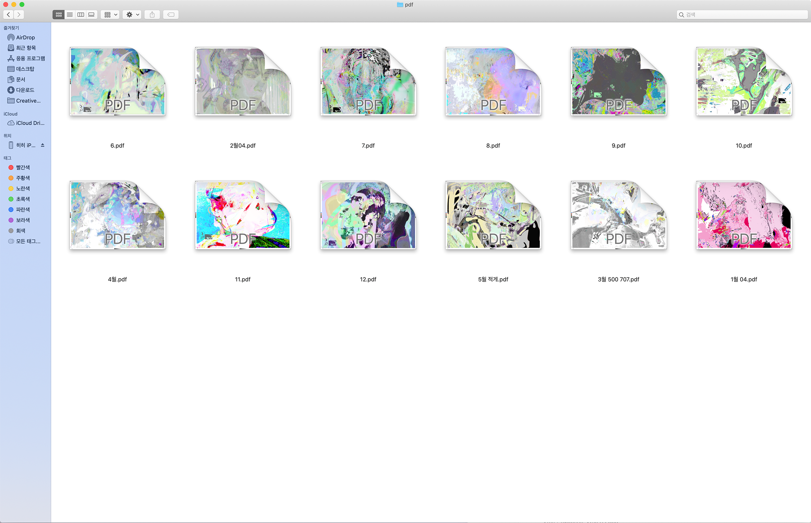
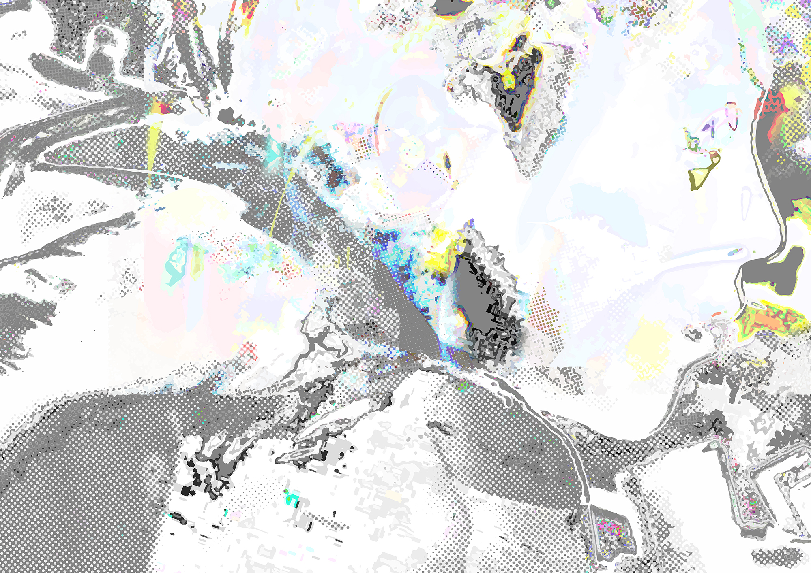
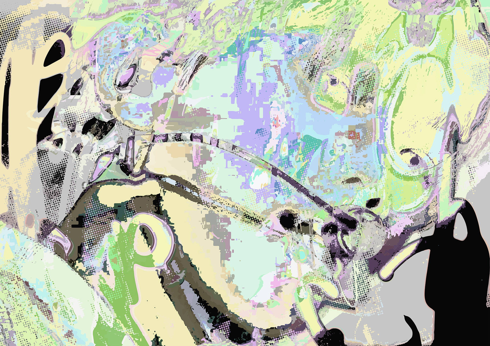

Q. 이번 학기에 했던 작업을 소개해주세요.
42개의 섬, 하나의 바다, 부분적 빙하. 2020.
A. 이건 이번 프린팅 프로덕션 수업에서 했던 작업이예요. 이 작업은 완성을 천천히 할 생각이에요.
2021 Monthly Poster. 2020.
그리고 이번 학기에 한 작업 중에 달력이 있어요. 달력이라기보다는 먼슬리 포스터예요. 해당 달에 생일인 아이돌 멤버 사진을 소스로 작업했어요. 이 작업은 이 이미지가 어떻게 도출되었는지, 그 과정을 알아차리지 못하게 하고 싶었어요. 근데 열두 개가 쌓이니까 프로세스가 보이는 것 같더라고요. 내가 열 두 번 작업해서 그런가? 아무튼 여기서는 인물이 보여도 되고 안 보여도 된다고 생각했어요. 이 작업은 지하철 생일 광고랑 맥락이 이어지는 것 같은데, 지하철 생일 광고를 보면 자기가 좋아하는 아이돌한테 ‘태어나줘서 고맙다’라고 말하는... 어떤 종교적인 느낌이 있잖아요. 그래서 이 작업에도 발광하는 프레임을 씌울까 생각 중이에요. 돈이 들더라도 괜찮은 디스플레이 방식을 고민하고 있어요.